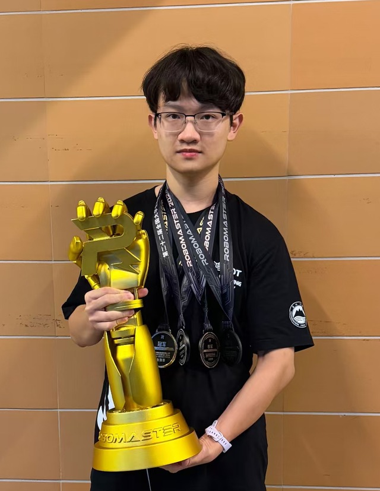

Tengkai Zhuang（庄腾楷）
I am currently pursuing an MPhil in Robotics and Autonomous Systems at The Hong Kong University of Science and Technology (Guangzhou), under the supervision of Prof. Jun Ma and co-advised by Prof. Boyu Zhou at STARLab (SUSTech). Previously, I received my B.Eng. in Robotic Engineering from Northeastern University (NEU) in 2025.
My research focuses on Spatial Intelligence, Vision-Language Navigation, Active Perception, and Autonomous 3D Reconstruction. If you are interested in research opportunities or collaborations, feel free to reach out at tzhuang778@connect.hkust-gz.edu.cn.

Publications
* indicates equal contribution; † indicates corresponding author.
Projects
DJI RoboMaster University Championship
Multi-sensor perception, real-time visual tracking, and localization systems for autonomous combat robots.
DJI RoboMaster University AI Challenge (UAV Track)
A perception, mapping, and trajectory planning framework for autonomous drone racing.